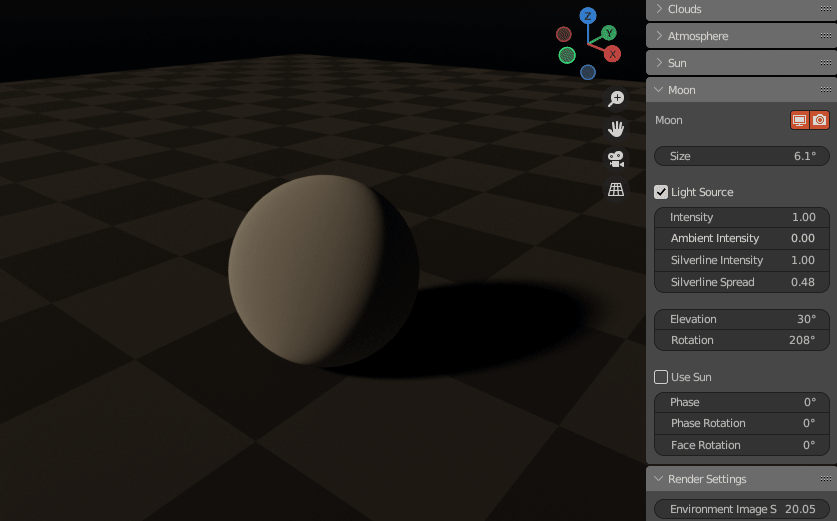
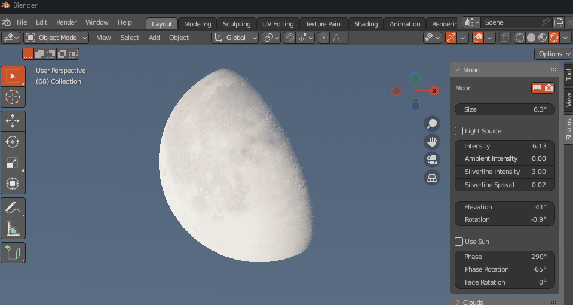
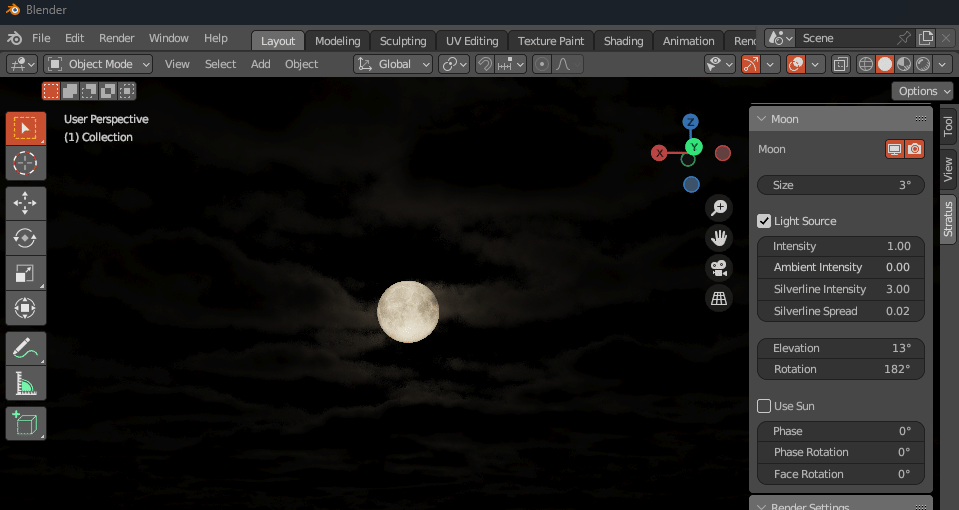
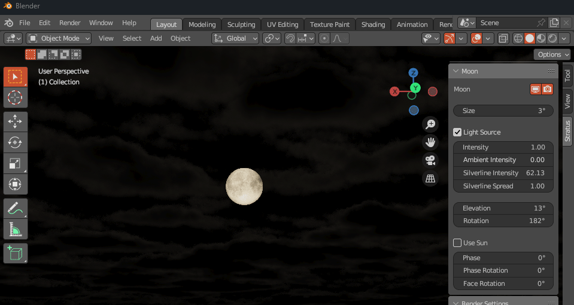
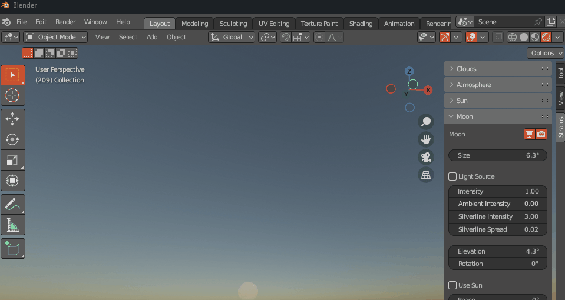
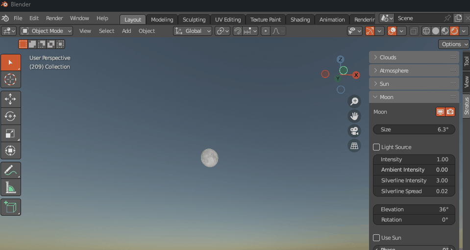
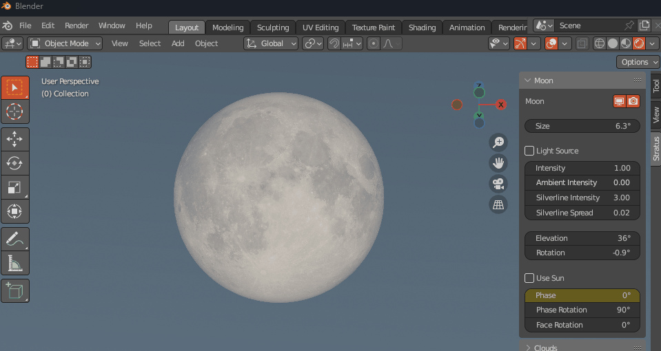
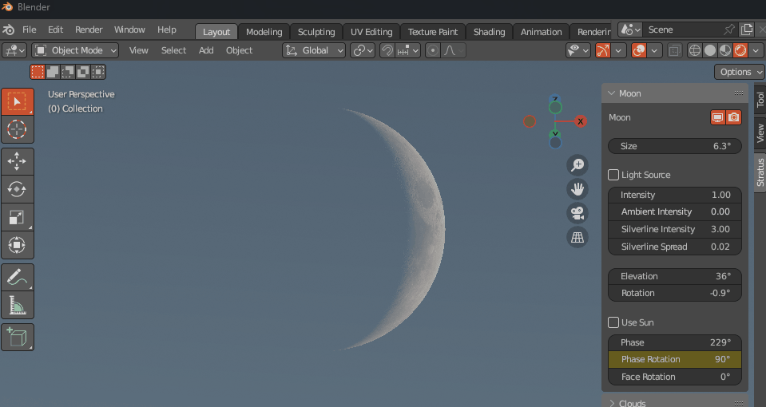

Moon
Note
This page is under construction.
Lighting
Size
Size of Moon.

Light Source
Enables the Moon as a light source for both the atmosphere and cloud layers.
Tip
Since the Sun is astronomically brighter than the moon, having both as light sources can be a waste of computation. Try it on and off, and see if it makes a difference to your scene.
Intensity
Strength of Moon disk.

Ambient Intensity
Strength of Moon ambient light.

Silverline Intensity
Intensity of the bright outline along the edge of the clouds.

Silverline Spread
The spread of the bright outline along the edge of the clouds.

Position
Elevation
Moon angle from horizon.

Rotation
Rotation of Moon around zenith.

Phase
Use Sun
Phase is based on the direction of the Sun.

Phase
The shape of the Moons directly sunlit portion.

Phase Rotation

Face Rotation
Rotation of the Moon Face